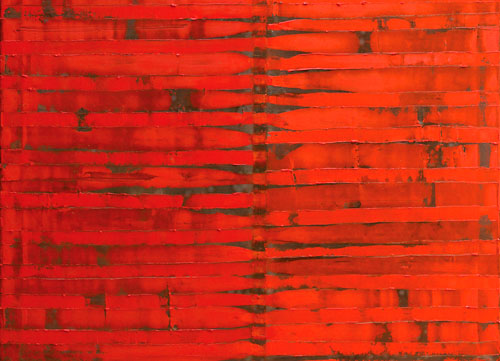

Details
Vernissage: Mittwoch, den 1. Oktober 2014
Eröffnung: Bvst Gerald Bischof
Die Ausstellung war bis Ende November 2014 nach Vereinbarung zu besuchen.

Vernissage: Mittwoch, den 1. Oktober 2014
Eröffnung: Bvst Gerald Bischof
Die Ausstellung war bis Ende November 2014 nach Vereinbarung zu besuchen.